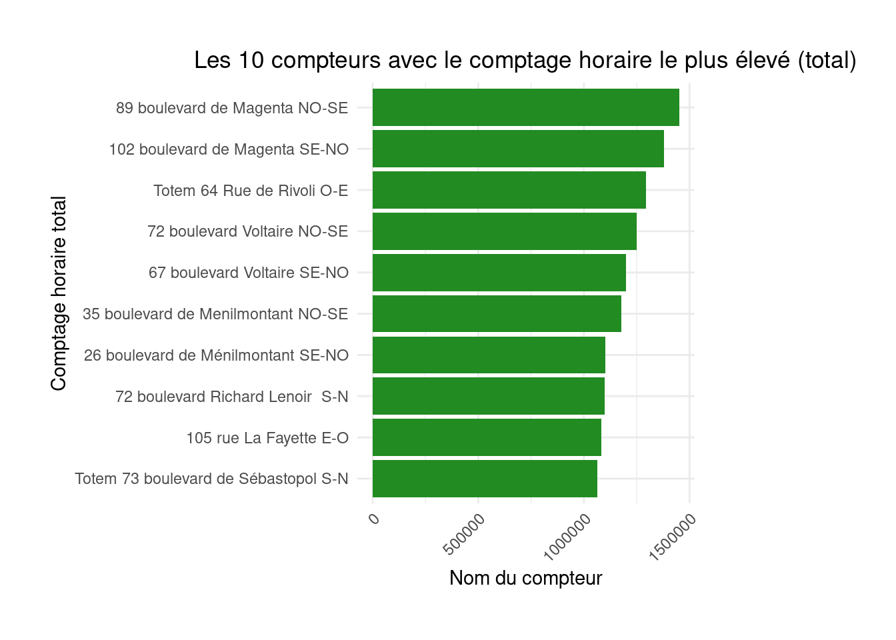

"une annotation explicative m'accompagne à droite"- 1
- Je m’affiche quand on passe la souris sur moi 🐭 !
Dans ce troisième TP, nous allons apprendre à importer et manipuler des données avec . est très bien outillé dans le domaine grâce à la librairie ggplot2 qui implémente une grammaire des graphiques flexible, cohérente et simple d’usage.
Si vous êtes intéressés par Python , une version très proche de ce TP est disponible dans mon cours de l’ENSAE.
Certains exemples de code présentent des annotations sur le côté, passez votre souris dessus pour les afficher, comme ci-dessous
"une annotation explicative m'accompagne à droite"La pratique de la visualisation se fera, dans ce cours, en répliquant des graphiques qu’on peut trouver sur la page de l’open-data de la ville de Paris ici.
Ce TP vise à initier:
ggplot2 pour la construction de graphiques figésplotly pour les graphiques dynamiques, au format HTMLDans ce chapitre, nous allons utiliser les librairies suivantes:
library(dplyr)
library(ggplot2)Nous verrons par la suite la manière de construire des cartes facilement avec des formats équivalents.
Un sous-ensemble des données de paris open data a été mis à disposition sur pour faciliter l’import (élimination des colonnes qui ne nous serviront pas mais ralentissent l’import).
Être capable de construire des visualisations de données intéressantes est une compétence nécessaire à tout data-scientist ou chercheur. Pour améliorer la qualité de ces visualisations, il est recommandé de suivre certains conseils donnés par des spécialistes de la dataviz sur la sémiologie graphique. Les bonnes visualisations de données, comme celles du New York Times, reposent certes sur des outils adaptés (des librairies JavaScript) mais aussi sur certaines règles de représentation qui permettent de comprendre en quelques secondes le message d’une visualisation. Ce post de blog est une ressource qu’il est utile de consulter régulièrement.
Chercher à produire une visualisation parfaite du premier coup est illusoire. Il est beaucoup plus réaliste d’améliorer graduellement une représentation graphique afin, petit à petit, de mettre en avant les effets de structure.
Nous allons donc commencer par nous représenter la distribution des principales stations. Pour cela nous allons produire rapidement un barplot puis l’améliorer graduellement.
Les données sont mises à disposition dans une forme simplifiée par rapport à celles de l’open data parisien. Nous proposons de les télécharger et les enregistrer dans un fichier sur le disque dur local avant de l’importer1.
Nous allons reproduire les deux premiers graphiques de la page d’analyse des données: Les 10 compteurs avec la moyenne horaire la plus élevée et Les 10 compteurs ayant comptabilisés le plus de vélos. Les valeurs chiffrées des graphiques seront différentes de celles de la page en ligne, c’est normal, nous travaillons sur des données plus anciennes.
url <- "https://minio.lab.sspcloud.fr/projet-formation/diffusion/python-datascientist/bike.csv"
download.file(url, "bike.gz")bike.gz. Celles-ci ont l’aspect suivant:# A tibble: 6 × 7
`Identifiant du compteur` `Nom du compteur` Identifiant du site …¹
<chr> <chr> <dbl>
1 100003096-SC 97 avenue Denfert Rochereau … 100003096
2 100003096-SC 97 avenue Denfert Rochereau … 100003096
3 100003096-SC 97 avenue Denfert Rochereau … 100003096
4 100003096-SC 97 avenue Denfert Rochereau … 100003096
5 100003096-SC 97 avenue Denfert Rochereau … 100003096
6 100003096-SC 97 avenue Denfert Rochereau … 100003096
# ℹ abbreviated name: ¹`Identifiant du site de comptage`
# ℹ 4 more variables: `Nom du site de comptage` <chr>,
# `Comptage horaire` <dbl>, `Date et heure de comptage` <dttm>,
# `Date d'installation du site de comptage` <date># A tibble: 6 × 2
`Nom du compteur` `Comptage horaire`
<chr> <dbl>
1 Totem 73 boulevard de Sébastopol S-N 197.
2 Totem 73 boulevard de Sébastopol N-S 148.
3 89 boulevard de Magenta NO-SE 144.
4 Totem 64 Rue de Rivoli O-E 140.
5 102 boulevard de Magenta SE-NO 137.
6 72 boulevard Voltaire NO-SE 124.
La suite de l’exercice consiste à améliorer graduellement cette représentation pour converger vers la reproduction de la version en open data.

ggplot2 mais ce n’est pas très esthétique. Changer le thème pour avoir les éléments suivants. Mettre à jour votre figure avec les éléments de style suivant:theme_minimal() +
theme(axis.text.x = element_text(angle = 45, hjust = 1),
plot.title = element_text(hjust = 0.5),
plot.margin = margin(1, 4, 1, 1, "cm"))

On peut remarquer plusieurs éléments problématiques (par exemple les labels) mais aussi des éléments ne correspondant pas (les titres des axes, etc.) ou manquants (le nom du graphique…)
Exercice 2 : Un peu de style !
D’habitude, nous recommandons d’utiliser directement l’URL de téléchargement ce qui évite de créer un fichier intermédiaire sur le disque dur. Néanmoins, ici, l’import direct avec readr ne fonctionnera pas car le fichier est mal interprété par la librairie. Celle-ci ne comprend pas que le fichier est compressé car il lui manque l’extension .gz (un format compressé) à la fin.↩︎